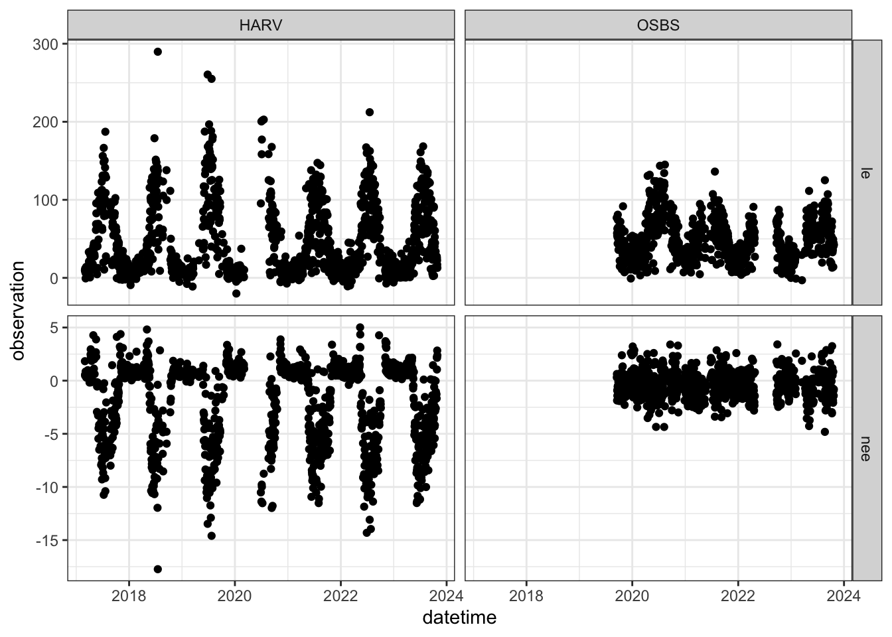
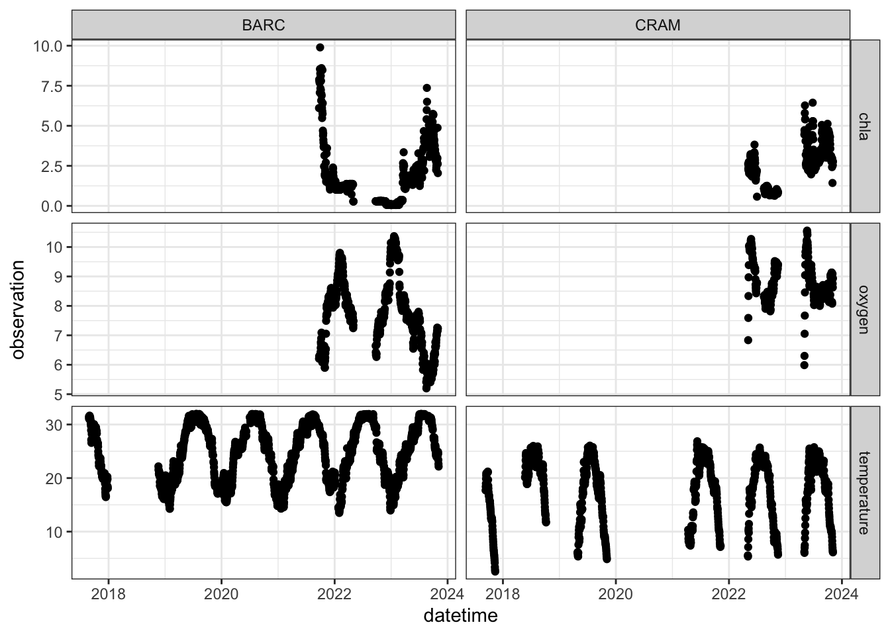
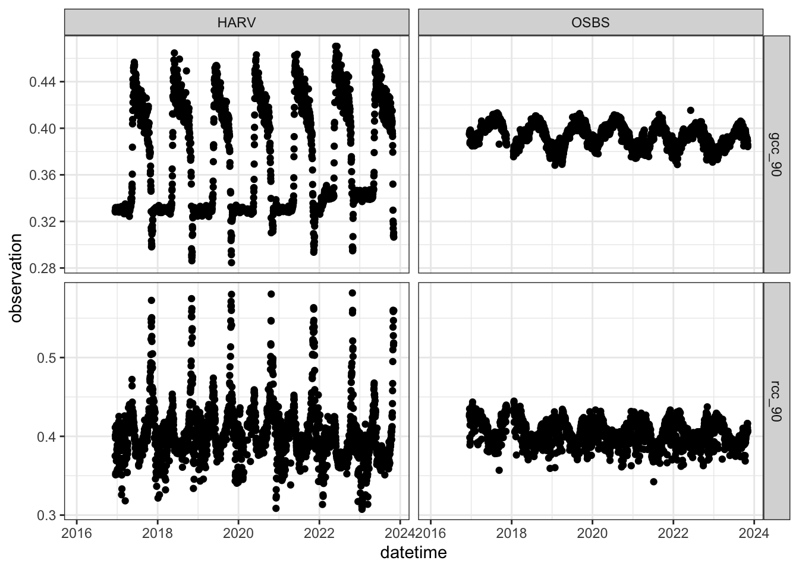
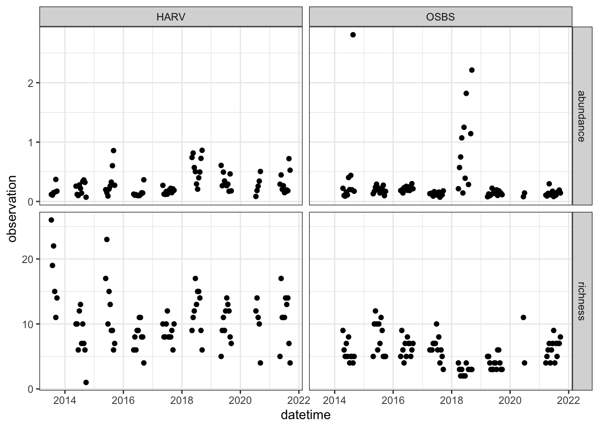
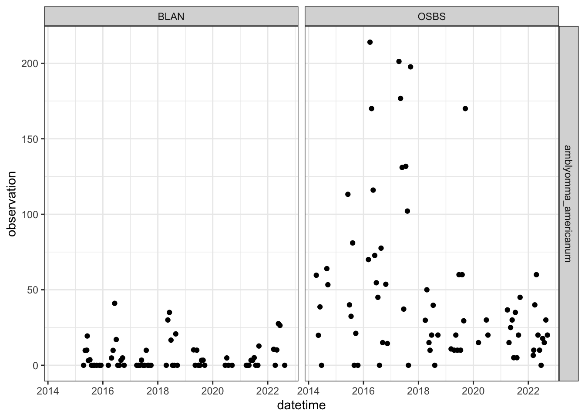

url <- "https://sdsc.osn.xsede.org/bio230014-bucket01/challenges/targets/project_id=neon4cast/duration=P1D/terrestrial_daily-targets.csv.gz"The targets were specifically chosen to include ecosystem, community, and population dynamics. Targets are available at all relative NEON sites. If you are interested in forecasting a single site, we recommend the following focal sites.
- Terrestrial: HARV
- Aquatics: BARC
- Phenology: HARV
- Beetles:
- Ticks:
Targets files
Terrestrial fluxes
Insert short description
terrestrial_targets <- read_csv(url, show_col_types = FALSE)glimpse(terrestrial_targets)Rows: 111,244
Columns: 6
$ project_id <chr> "neon4cast", "neon4cast", "neon4cast", "neon4cast", "neon4…
$ site_id <chr> "BART", "BART", "BART", "BART", "BART", "BART", "BART", "B…
$ datetime <dttm> 2017-02-02, 2017-02-02, 2017-02-03, 2017-02-03, 2017-02-0…
$ duration <chr> "P1D", "P1D", "P1D", "P1D", "P1D", "P1D", "P1D", "P1D", "P…
$ variable <chr> "le", "nee", "le", "nee", "le", "nee", "le", "nee", "le", …
$ observation <dbl> 2.7087720, 0.5801368, 8.4720864, 0.6873984, 6.6410325, 0.6…| variable | duration | Description | horizon |
|---|---|---|---|
| le | P1D | daily mean latent heat flux (W/m2) | 30 days |
| nee | P1D | daily mean Net ecosystem exchange (gC/m2/day) | 30 days |
terrestrial_targets |>
filter(site_id %in% c("HARV", "OSBS")) |>
ggplot(aes(x = datetime, y = observation)) +
geom_point() +
facet_grid(variable~site_id, scales = "free_y") +
theme_bw()
Learn more at: https://projects.ecoforecast.org/neon4cast-docs/Terrestrial.html
Aquatics
url <- "https://sdsc.osn.xsede.org/bio230014-bucket01/challenges/targets/project_id=neon4cast/duration=P1D/aquatics-targets.csv.gz"aquatics_targets <- read_csv(url, show_col_types = FALSE)glimpse(aquatics_targets)Rows: 58,082
Columns: 6
$ project_id <chr> "neon4cast", "neon4cast", "neon4cast", "neon4cast", "neon4…
$ site_id <chr> "ARIK", "ARIK", "ARIK", "ARIK", "ARIK", "ARIK", "ARIK", "A…
$ datetime <dttm> 2016-08-17, 2016-08-18, 2016-08-19, 2016-08-20, 2016-08-2…
$ duration <chr> "P1D", "P1D", "P1D", "P1D", "P1D", "P1D", "P1D", "P1D", "P…
$ variable <chr> "temperature", "temperature", "temperature", "temperature"…
$ observation <dbl> 24.55817, 20.60144, 20.14269, 17.72215, 17.73065, 19.86279…| variable | duration | Description | horizon |
|---|---|---|---|
| temperature | P1D | Surface Mean Daily Water Temperature (Celsius) | 30 days |
| chla | P1D | daily mean Chlorophyll-a (ug/L) | 30 days |
| oxygen | P1D | Surface Mean Daily Dissolved Oxygen Concentration (mgL) | 30 days |
aquatics_targets |>
filter(site_id %in% c("BARC", "CRAM")) |>
ggplot(aes(x = datetime, y = observation)) +
geom_point() +
facet_grid(variable~site_id, scales = "free_y") +
theme_bw()Warning: Removed 219 rows containing missing values (`geom_point()`).
Learn more at: https://projects.ecoforecast.org/neon4cast-docs/Aquatics.html
Phenology
url <- "https://sdsc.osn.xsede.org/bio230014-bucket01/challenges/targets/project_id=neon4cast/duration=P1D/phenology-targets.csv.gz"phenology_targets <- read_csv(url, show_col_types = FALSE)glimpse(phenology_targets)Rows: 266,678
Columns: 6
$ project_id <chr> "neon4cast", "neon4cast", "neon4cast", "neon4cast", "neon4…
$ site_id <chr> "ABBY", "ABBY", "ABBY", "ABBY", "ABBY", "ABBY", "ABBY", "A…
$ datetime <dttm> 2016-01-29, 2016-01-30, 2016-01-31, 2016-02-01, 2016-02-0…
$ duration <chr> "P1D", "P1D", "P1D", "P1D", "P1D", "P1D", "P1D", "P1D", "P…
$ variable <chr> "gcc_90", "gcc_90", "gcc_90", "gcc_90", "gcc_90", "gcc_90"…
$ observation <dbl> NA, NA, NA, NA, NA, NA, NA, NA, NA, NA, NA, NA, NA, NA, NA…| variable | duration | Description | horizon |
|---|---|---|---|
| gcc_90 | P1D | Green chromatic coordinate is the ratio of the green digital number to the sum of the red, green, blue digital numbers from a digital camera. | 30 days |
| rcc_90 | P1D | Red chromatic coordinate is the ratio of the Red digital number to the sum of the red, green, blue digital numbers from a digital camera. | 30 days |
phenology_targets |>
filter(site_id %in% c("HARV", "OSBS")) |>
ggplot(aes(x = datetime, y = observation)) +
geom_point() +
facet_grid(variable~site_id, scales = "free_y") +
theme_bw()Warning: Removed 1672 rows containing missing values (`geom_point()`).
Learn more at: https://projects.ecoforecast.org/neon4cast-docs/Phenology.html
Beetle communities
url <- "https://sdsc.osn.xsede.org/bio230014-bucket01/challenges/targets/project_id=neon4cast/duration=P1W/beetles-targets.csv.gz"beetles_targets <- read_csv(url, show_col_types = FALSE)glimpse(beetles_targets)Rows: 5,280
Columns: 6
$ project_id <chr> "neon4cast", "neon4cast", "neon4cast", "neon4cast", "neon4…
$ site_id <chr> "ABBY", "ABBY", "ABBY", "ABBY", "ABBY", "ABBY", "ABBY", "A…
$ datetime <dttm> 2016-09-12, 2016-09-12, 2016-09-26, 2016-09-26, 2017-05-0…
$ duration <chr> "P1W", "P1W", "P1W", "P1W", "P1W", "P1W", "P1W", "P1W", "P…
$ variable <chr> "abundance", "richness", "abundance", "richness", "abundan…
$ observation <dbl> 0.3599440, 14.0000000, 0.8171691, 13.0000000, 0.2012987, 1…| variable | duration | Description | horizon |
|---|---|---|---|
| abundance | P1W | Total number of carabid individuals per trap-night, estimated each week of the year at each NEON site | 1 year |
| richness | P1W | Total number of unique ‘species’ in a sampling bout for each NEON site each week. | 1 year |
beetles_targets |>
filter(site_id %in% c("HARV", "OSBS")) |>
ggplot(aes(x = datetime, y = observation)) +
geom_point() +
facet_grid(variable~site_id, scales = "free_y") +
theme_bw()
Learn more at: https://projects.ecoforecast.org/neon4cast-docs/Beetles.html
Tick populations
url <- "https://sdsc.osn.xsede.org/bio230014-bucket01/challenges/targets/project_id=neon4cast/duration=P1W/ticks-targets.csv.gz"ticks_targets <- read_csv(url, show_col_types = FALSE)glimpse(ticks_targets)Rows: 622
Columns: 6
$ project_id <chr> "neon4cast", "neon4cast", "neon4cast", "neon4cast", "neon4…
$ site_id <chr> "BLAN", "BLAN", "BLAN", "BLAN", "BLAN", "BLAN", "BLAN", "B…
$ datetime <dttm> 2015-04-20, 2015-05-11, 2015-06-01, 2015-06-08, 2015-06-2…
$ duration <chr> "P1W", "P1W", "P1W", "P1W", "P1W", "P1W", "P1W", "P1W", "P…
$ variable <chr> "amblyomma_americanum", "amblyomma_americanum", "amblyomma…
$ observation <dbl> 0.000000, 9.815951, 10.000000, 19.393939, 3.137255, 3.6613…| variable | duration | Description | horizon |
|---|
ticks_targets |>
filter(site_id %in% c("BLAN", "OSBS")) |>
ggplot(aes(x = datetime, y = observation)) +
geom_point() +
facet_grid(variable~site_id, scales = "free_y") +
theme_bw()
Learn more at: https://projects.ecoforecast.org/neon4cast-docs/Beetles.html
Sites
The following table lists all the sites in the NEON Ecological Forecasting Challenge along with the “themes” that it is included it.
site_list <- read_csv("../neon4cast_field_site_metadata.csv", show_col_types = FALSE) |>
rename(site_id = field_site_id) |>
select(site_id, field_site_name, terrestrial, aquatics, phenology, ticks, beetles) | site_id | field_site_name | terrestrial | aquatics | phenology | ticks | beetles |
|---|---|---|---|---|---|---|
| ABBY | Abby Road NEON | 1 | 0 | 1 | 0 | 1 |
| ARIK | Arikaree River NEON | 0 | 1 | 0 | 0 | 0 |
| BARC | Lake Barco NEON | 0 | 1 | 0 | 0 | 0 |
| BARR | Utqiaġvik NEON | 1 | 0 | 1 | 0 | 1 |
| BART | Bartlett Experimental Forest NEON | 1 | 0 | 1 | 0 | 1 |
| BIGC | Upper Big Creek NEON | 0 | 1 | 0 | 0 | 0 |
| BLAN | Blandy Experimental Farm NEON | 1 | 0 | 1 | 1 | 1 |
| BLDE | Blacktail Deer Creek NEON | 0 | 1 | 0 | 0 | 0 |
| BLUE | Blue River NEON | 0 | 1 | 0 | 0 | 0 |
| BLWA | Black Warrior River NEON | 0 | 1 | 0 | 0 | 0 |
| BONA | Caribou-Poker Creeks Research Watershed NEON | 1 | 0 | 1 | 0 | 1 |
| CARI | Caribou Creek NEON | 0 | 1 | 0 | 0 | 0 |
| CLBJ | Lyndon B. Johnson National Grassland NEON | 1 | 0 | 1 | 0 | 1 |
| COMO | Como Creek NEON | 0 | 1 | 0 | 0 | 0 |
| CPER | Central Plains Experimental Range NEON | 1 | 0 | 1 | 0 | 1 |
| CRAM | Crampton Lake NEON | 0 | 1 | 0 | 0 | 0 |
| CUPE | Rio Cupeyes NEON | 0 | 1 | 0 | 0 | 0 |
| DCFS | Dakota Coteau Field Site NEON | 1 | 0 | 1 | 0 | 1 |
| DEJU | Delta Junction NEON | 1 | 0 | 1 | 0 | 1 |
| DELA | Dead Lake NEON | 1 | 0 | 1 | 0 | 1 |
| DSNY | Disney Wilderness Preserve NEON | 1 | 0 | 1 | 0 | 1 |
| FLNT | Flint River NEON | 0 | 1 | 0 | 0 | 0 |
| GRSM | Great Smoky Mountains National Park NEON | 1 | 0 | 1 | 0 | 1 |
| GUAN | Guanica Forest NEON | 1 | 0 | 1 | 0 | 1 |
| GUIL | Rio Guilarte NEON | 0 | 1 | 0 | 0 | 0 |
| HARV | Harvard Forest & Quabbin Watershed NEON | 1 | 0 | 1 | 0 | 1 |
| HEAL | Healy NEON | 1 | 0 | 1 | 0 | 1 |
| HOPB | Lower Hop Brook NEON | 0 | 1 | 0 | 0 | 0 |
| JERC | The Jones Center At Ichauway NEON | 1 | 0 | 1 | 0 | 1 |
| JORN | Jornada Experimental Range NEON | 1 | 0 | 1 | 0 | 1 |
| KING | Kings Creek NEON | 0 | 1 | 0 | 0 | 0 |
| KONA | Konza Prairie Agroecosystem NEON | 1 | 0 | 1 | 0 | 1 |
| KONZ | Konza Prairie Biological Station NEON | 1 | 0 | 1 | 1 | 1 |
| LAJA | Lajas Experimental Station NEON | 1 | 0 | 1 | 0 | 1 |
| LECO | LeConte Creek NEON | 0 | 1 | 0 | 0 | 0 |
| LENO | Lenoir Landing NEON | 1 | 0 | 1 | 1 | 1 |
| LEWI | Lewis Run NEON | 0 | 1 | 0 | 0 | 0 |
| LIRO | Little Rock Lake NEON | 0 | 1 | 0 | 0 | 0 |
| MART | Martha Creek NEON | 0 | 1 | 0 | 0 | 0 |
| MAYF | Mayfield Creek NEON | 0 | 1 | 0 | 0 | 0 |
| MCDI | McDiffett Creek NEON | 0 | 1 | 0 | 0 | 0 |
| MCRA | McRae Creek NEON | 0 | 1 | 0 | 0 | 0 |
| MLBS | Mountain Lake Biological Station NEON | 1 | 0 | 1 | 0 | 1 |
| MOAB | Moab NEON | 1 | 0 | 1 | 0 | 1 |
| NIWO | Niwot Ridge NEON | 1 | 0 | 1 | 0 | 1 |
| NOGP | Northern Great Plains Research Laboratory NEON | 1 | 0 | 1 | 0 | 1 |
| OAES | Marvin Klemme Range Research Station NEON | 1 | 0 | 1 | 0 | 1 |
| OKSR | Oksrukuyik Creek NEON | 0 | 1 | 0 | 0 | 0 |
| ONAQ | Onaqui NEON | 1 | 0 | 1 | 0 | 1 |
| ORNL | Oak Ridge NEON | 1 | 0 | 1 | 1 | 1 |
| OSBS | Ordway-Swisher Biological Station NEON | 1 | 0 | 1 | 1 | 1 |
| POSE | Posey Creek NEON | 0 | 1 | 0 | 0 | 0 |
| PRIN | Pringle Creek NEON | 0 | 1 | 0 | 0 | 0 |
| PRLA | Prairie Lake NEON | 0 | 1 | 0 | 0 | 0 |
| PRPO | Prairie Pothole NEON | 0 | 1 | 0 | 0 | 0 |
| PUUM | Pu’u Maka’ala Natural Area Reserve NEON | 1 | 0 | 1 | 0 | 1 |
| REDB | Red Butte Creek NEON | 0 | 1 | 0 | 0 | 0 |
| RMNP | Rocky Mountains NEON | 1 | 0 | 1 | 0 | 1 |
| SCBI | Smithsonian Conservation Biology Institute NEON | 1 | 0 | 1 | 1 | 1 |
| SERC | Smithsonian Environmental Research Center NEON | 1 | 0 | 1 | 1 | 1 |
| SJER | San Joaquin Experimental Range NEON | 1 | 0 | 1 | 0 | 1 |
| SOAP | Soaproot Saddle NEON | 1 | 0 | 1 | 0 | 1 |
| SRER | Santa Rita Experimental Range NEON | 1 | 0 | 1 | 0 | 1 |
| STEI | Steigerwaldt-Chequamegon NEON | 1 | 0 | 1 | 0 | 1 |
| STER | North Sterling NEON | 1 | 0 | 1 | 0 | 1 |
| SUGG | Lake Suggs NEON | 0 | 1 | 0 | 0 | 0 |
| SYCA | Sycamore Creek NEON | 0 | 1 | 0 | 0 | 0 |
| TALL | Talladega National Forest NEON | 1 | 0 | 1 | 1 | 1 |
| TEAK | Lower Teakettle NEON | 1 | 0 | 1 | 0 | 1 |
| TECR | Teakettle Creek - Watershed 2 NEON | 0 | 1 | 0 | 0 | 0 |
| TOMB | Lower Tombigbee River NEON | 0 | 1 | 0 | 0 | 0 |
| TOOK | Toolik Lake NEON | 0 | 1 | 0 | 0 | 0 |
| TOOL | Toolik Field Station NEON | 1 | 0 | 1 | 0 | 1 |
| TREE | Treehaven NEON | 1 | 0 | 1 | 0 | 1 |
| UKFS | University of Kansas Field Station NEON | 1 | 0 | 1 | 1 | 1 |
| UNDE | University of Notre Dame Environmental Research Center NEON | 1 | 0 | 1 | 0 | 1 |
| WALK | Walker Branch NEON | 0 | 1 | 0 | 0 | 0 |
| WLOU | West St Louis Creek NEON | 0 | 1 | 0 | 0 | 0 |
| WOOD | Chase Lake National Wildlife Refuge NEON | 1 | 0 | 1 | 0 | 1 |
| WREF | Wind River Experimental Forest NEON | 1 | 0 | 1 | 0 | 1 |
| YELL | Yellowstone National Park NEON | 1 | 0 | 1 | 0 | 1 |
Additional variables
Hourly water temperature
Daily time-step variables measured in the monitored stream (Tunnel Branch; site_id = tubr)
url <- "https://sdsc.osn.xsede.org/bio230014-bucket01/challenges/targets/project_id=neon4cast/duration=PT1H/aquatics-expanded-observations.csv.gz"
aquatics_expanded <- read_csv(url, show_col_types = FALSE)
glimpse(aquatics_expanded)Rows: 1,412,364
Columns: 6
$ project_id <chr> "neon4cast", "neon4cast", "neon4cast", "neon4cast", "neon4…
$ site_id <chr> "SUGG", "SUGG", "SUGG", "SUGG", "SUGG", "SUGG", "SUGG", "S…
$ datetime <dttm> 2017-08-19 00:00:00, 2017-08-19 00:00:00, 2017-08-19 00:0…
$ duration <chr> "PT1H", "PT1H", "PT1H", "PT1H", "PT1H", "PT1H", "PT1H", "P…
$ variable <chr> "temperature", "temperature", "temperature", "temperature"…
$ observation <dbl> 29.570, 29.600, 29.610, 29.610, 29.610, 29.658, 29.510, 29…